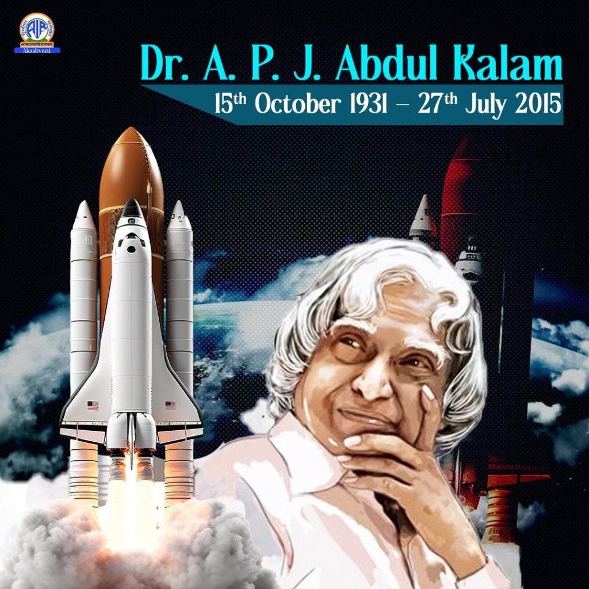
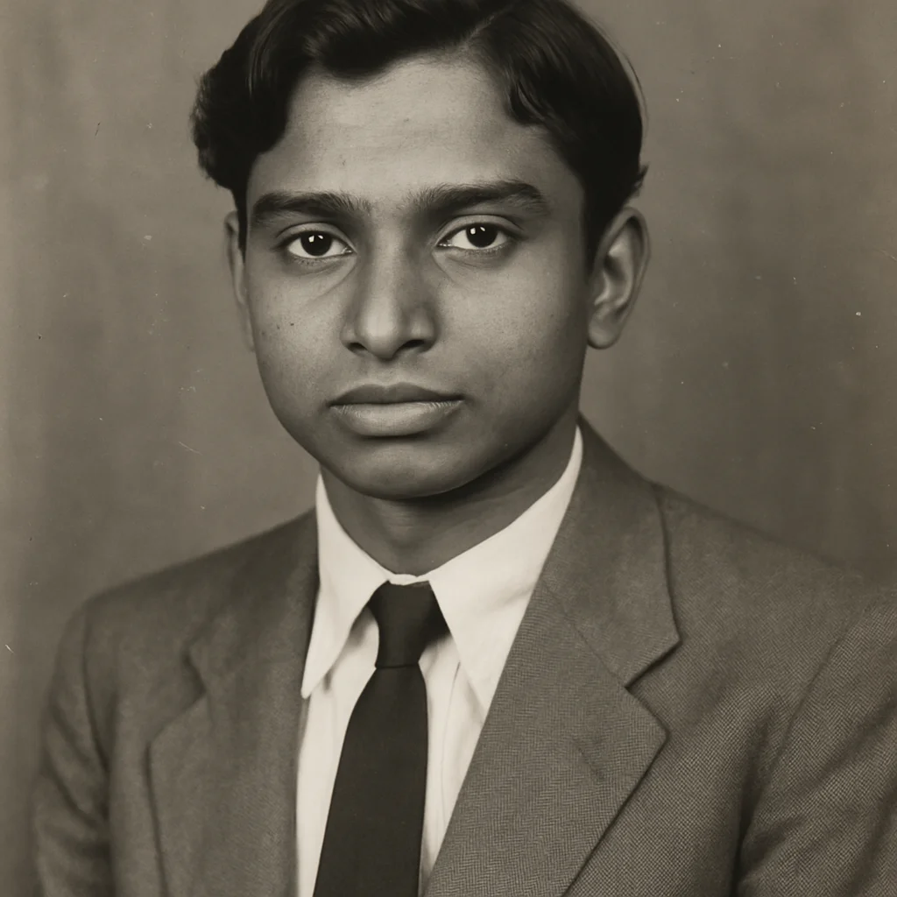
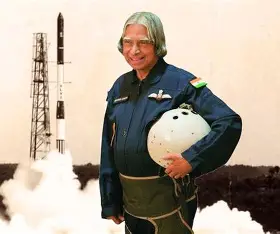
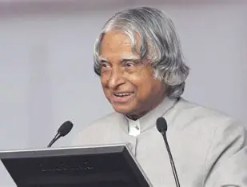
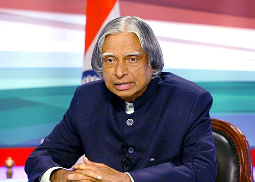
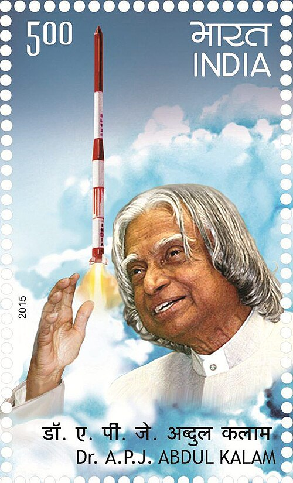

Dr. Avul Pakir Jainulabdeen Abdul Kalam (born October 15, 1931, Rameswaram, India—died July 27, 2015, Shillong) was an Indian scientist and politician who played a leading role in the development of India's missile and nuclear weapons programs. He was President of India from 2002 to 2007. His scientific achievements and popularity gained him the epithets Missile Man and People's President.
Early life and career

Kalam was born in a town in Tamil Nadu state to a fishing boat owner from a once-wealthy family. The youngest of five siblings, Kalam persevered with his education despite impoverished circumstances. He earned a degree in aeronautical engineering from the Madras Institute of Technology and in 1958 joined the Defence Research and Development Organisation (DRDO). In 1969, he moved to the Indian Space Research Organisation (ISRO), where he was project director of the SLV-III, the first satellite launch vehicle designed and produced in India. In 1980, SLV-III successfully released the Rohini satellite into near-Earth orbit, taking India's space program to the international stage. Kalam oversaw further development of launch vehicle technologies at ISRO, including the Polar Satellite Launch Vehicle (PSLV).
Missile program

Having rejoined DRDO in 1982, Kalam planned the Integrated Guided Missile Development Programme, which produced a number of successful missiles. Among them was Agni, India's first intermediate-range ballistic missile, incorporating aspects of the SLV-III (first launched in 1989). Another landmark success was the surface-to-surface tactical missile Prithvi.
Nuclear program

From 1992 to 1999 Kalam was scientific adviser to India's defense minister, and later served as principal scientific adviser (1999–2001) to the government with cabinet rank. In 1998, he served as one of the chief coordinators of the Pokhran-II series of nuclear tests, solidifying India as a nuclear power. In 1998, Kalam also introduced Technology Vision 2020, outlining actionable roadmaps to transform India into an economically developed nation.
Presidency

In 2002, Kalam was elected the 11th President of India with bipartisan support across the political spectrum. During his tenure, his accessibility, open interactions with students, and integrity cemented his legacy as the "People's President." He completed his term in July 2007 and was succeeded by Pratibha Patil.
Legacy

Following his presidency, Kalam served as a visiting professor across multiple Indian Institutes of Management (IIMs) and was the founding chancellor of the Indian Institute of Space Science and Technology (IIST), Thiruvananthapuram. He dedicated his post-presidency to engaging with over a million school and university students across India.
Death and honors

On July 27, 2015, Kalam collapsed while delivering a lecture at IIM Shillong and passed away shortly after. He was honored with India's three highest civilian awards: the Padma Bhushan (1981), Padma Vibhushan (1990), and the Bharat Ratna (1997). In 2015, Wheeler Island was renamed Dr. Abdul Kalam Island in his memory.
Books by Dr. Kalam
- Wings of Fire (1999)
- India 2020: A Vision for the New Millennium (1998)
- Ignited Minds (2002)
- My Journey: Transforming Dreams into Actions (2013)